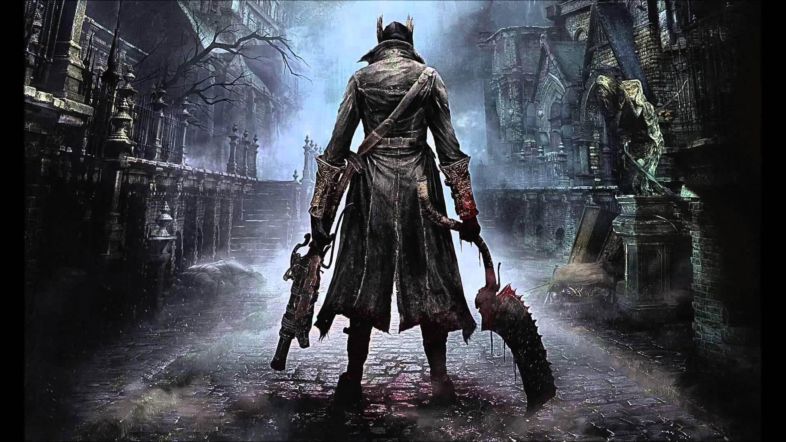

BloodBorn
Bloodborne é um RPG eletrônico de ação produzido pela FromSoftware e publicado pela Sony Computer Entertainment a 24 de Março de 2015 em exclusivo para a PlayStation 4, sendo o quarto game da serie Souls.
Bloodborne foi realizado por Hidetaka Miyazaki, diretor de Demon's Souls e Dark Souls. Miyazaki afirmou que o jogo nunca foi produzido com o sentido de ser Demon's Souls II, porque a Sony Computer Entertainment queria uma nova IP para a PlayStation 4. Foi anunciado pela Sony a 9 de junho de 2014 durante a Electronic Entertainment Expo 2014, onde foi bem recebido pela critica ganhando diversos prêmios e nomeações. Bloodborne foi descrito por Paul Sullivan da Sony como “Dark Souls com Caçadeiras”.
História
Assim como seus antecessores, a história do jogo é bastante vaga e cabe aos jogadores investigarem e teorizarem sobre os acontecimentos
A noite da caçada
No início do jogo somos recebidos por um senhor,que nos faz uma transfusão de sangue. Recebemos o sangue de Yharnam. Acordamos em plena noite da caçada, com um recado que diz “busque o Paleblood (Sangue Pálido) para transcender a caçada”.
E o que é essa noite da caçada? Em algum momento, algo deu muito errado em Yharnam e suas imediações, muitas pessoas foram infectadas por uma doença transmitida pelo sangue e se tornaram bestas. A Healing Church (Igreja da Cura) então criou dois grupos: Os curandeiros de branco e os assassinos de preto. O papel dos primeiros seria curar e ajudar as pessoas acometidas por doenças, seja ela a doença das feras ou não. Já o segundo grupo seria uma espécie de unidade de expurgo, pronta para caçar e destruir as bestas e ameaças que saíssem do controle. Os próprios habitantes da cidade organizam caçadas a esses monstros. O caos está instaurado.

é importante apontar as diferentes organizações envolvidas com a caçada: os já citados White Garbed Healers e Black Garbed Killers, originaram outras facções. Possivelmente o lendário caçador Ludwig criou um grupo chamado Holy Blades, uma extensão dos curandeiros de branco. Nosso velho amigo Gehrman, por sua vez, provavelmente membro dos matadores de preto, começou a criar armas, roupas e itens no Workshop, e com seus vários discípulos surgiu o grupo de caçadores como conhecemos no início do jogo.
A situação de Central Yharnam
Em poucos momentos conhecemos o Hunter’s Dream (Sonho do Caçador), o qual não nos aprofundaremos hoje. E de lá acordamos novamente na região de Yharnam Central. O que vemos é justamente uma cidade tomada por pessoas caçando nas ruas, outras tantas trancadas em suas casas, feras queimadas em praças, assim como animais distorcidos, como ratos e corvos.
Mas, tais pessoas que estão caçando na rua também não são feras? Sim. No momento em que começamos o jogo, praticamente todas as pessoas estão infectadas com o sangue de Yharnam, e destas a maioria está se transformando em uma besta, em maior ou menor grau, dando lugar a uma existência violenta. Existe uma negação muito forte por parte das pessoas de Yharnam.
O primeiro NPC que conhecemos é Gilbert, um caçador forasteiro assim como você, mas que está trancado em uma casa, pois não está se sentindo bem. Ele te diz que não conhece o sangue pálido, mas que se estamos buscando por sangue e tratamento de sangue, devemos ir até a Catedral procurar pelos segredos da Igreja da Cura. O caminho está fechado, no entanto. Outro diálogo com Gilbert traz um momento de reflexão: ele diz que veio para Yharnam prolongar sua vida, já que tinha uma doença (não se sabe qual). E que com o sangue da cidade conseguiu viver por mais tempo, e que iria morrer como homem. Desculpem pular para frente, mas ele morre como uma fera, morto por nossas próprias mãos.

O que é importante no que ele nos diz, entretanto, é que procurou a cura de sangue para lidar com outra doença. A cura de sangue, por um bom tempo, ajudou as pessoas a superar problemas e desafios. Um tipo de sangue que nos traz mais poder, que nos torna mais que humanos, mas que, enfim, nos torna não mais humanos. Então, teria tudo começado com o sangue e os experimentos da Igreja? Mais ou menos, mas deixemos isso de lado por hora.
Nosso primeiro desafio é tentar chegar na área da Catedral. A grande ponte não nos leva até lá, visto que a Igreja trancou todo mundo para fora de sua área, após as coisas desandarem em Central Yharnam. Devemos ir através dos aquedutos. Pelo caminho conhecemos Eileen, a caçadora de caçadores (ela será importante mais para frente em nossa história), e uma pequena criança.
A triste história de Father Gascoigne
Nos aproximando da Catedral, entramos em contato com a primeira grande tragédia pessoal de Bloodborne: a vida de Padre Gascoigne. Quem é ele? Um caçador vindo de fora de Yharnam (e por isso chamado de “Father”, já que esta não era uma denominação da Igreja) que entrou nas fileiras da Healing Church. Dedicando sua vida a caçar feras e monstros, em algum momento Gascoigne deixou de fazer parte da Igreja.
É possível que ele tenha tomado essa decisão ao conhecer Viola, seu grande amor e futura mãe de suas duas filhas. Assim, ele preferiu se dedicar à família. Um de seus caçadores companheiros, Henryk (que é conhecido como a dupla de Gascoigne), se desentendeu com ele. Talvez porque Gascoigne quis sair da Igreja, ou talvez por outro motivo obscuro. De qualquer forma, quando começamos o jogo, Father Gascoigne está envolvido na caça. Talvez porque a atual situação das coisas fugiu de controle e ele quer proteger sua família. Ou seria por conta da sua doença que está saindo do controle, fazendo com que ele tenha que procurar a Igreja novamente?
O fato dele estar de posse da chave que abre o caminho para a Catedral pode ser um forte indício de que foi esse o caso. Mas, Gascoigne começou a demorar muito para voltar da caçada, e sua amada Viola resolveu procurá-lo. Ouvimos essa história da boca da própria filha do casal, uma garotinha que conversa com a gente por de trás da janela de sua casa. Ela está preocupada com a demora dos pais. Ela nos diz que sua mãe usa um broche com uma jóia vermelha e nos dá esse item
Está mais que claro que seus pais são Gascoigne e Viola. Encontramos com o mítico caçador em um cemitério. Ele já está perdendo sua consciência e dando lugar à besta. Se usamos a caixinha de música durante a luta, Gascoigne fica atordoado e dá espaço para atacarmos por um bom tempo. E por fim, matamos o guerreiro. No mesmo lugar, encontramos o corpo de Viola.
Essa mulher estava segurando a jóia vermelha, então não nos resta dúvidas. Gascoigne teria matado sua mulher em um surto? Seria a caixinha de música o “remédio” para o caçador, e Viola tendo esquecido em casa não conseguiu impedir seu amado de matá-la? É possível, no entanto eu acredito que Gascoigne encontrou Viola já morta ali, e que a fera que ele está matando quando o encontramos é o verdadeiro assassino. Após sua mulher morrer, porém, ele, um homem honrado e forte, deixa a natureza bestial tomar conta. De uma forma ou de outra, quando o amor morreu, Gascoigne perdeu a razão de ser.
E suas filhas? Se você entregar a jóia vermelha para a criança ela chora e você nunca mais consegue interagir com ela. Se escondermos que encontramos sua mãe, ela resolve sair pra procurar ou ir para outro lugar seguro, apenas para encontrarmos seu corpo no aqueduto depois. E aí podemos conhecer a filha mais velha se voltarmos na casa de Gascoigne. Ela está preocupada com o sumiço da irmãzinha. Conforme o jogo progride e a doença vai se fortalecendo nas pessoas, ela acaba surtando e morre ao cair de uma escada.

Hemwick e a Bruxa dos olhos
Em um pequeno detour podemos conhecer a região de Hemwick. Lá encontramos uma série de pessoas delirantes, monstros violentos e uma cidade completamente destruída. Interessante notar que encontramos muito do mesmo item: Bloodshot Eyeball.
A chefe do lugar, a temida Bruxa de Hemwick, tem vários olhos em seu corpo. E aparentemente busca esses itens acima de tudo. Essa cidade inteira parece viver em torno dos rituais feitos pela Bruxa. Mas que rituais são esses?
O item Bloodshot Eyeball é usado em rituais para entrarmos em Hintertombs, uma região das dungeons do cálice. E o que tem de especial lá que ela tanto procura? Um poder “divino”. Semana que vem pegaremos o gancho da Bruxa de Hemwick e da história de Old Yharnam para falar sobre os cálices, o passado de Yharnam e começar a discutir os Great Ones.

Continua...
Jogabilidade
Apesar de ter elementos similares de um role playing de ação iguais a Demon's Souls e Dark Souls, existem diferenças significativas nas mecânicas de Bloodborne. O combate tem um ritmo mais rápido e requer uma abordagem mais ofensiva para que os jogadores possam sobreviver a densas hordas de inimigos. O jogador é muito mais ágil para poder desempenhar saltos em redor dos inimigos enquanto estão na mira. O novo estilo “risco vs recompensa” está acentuado através do sistema de regeneração de energia, permitindo aos jogadores, dentro de uma pequena janela de tempo, recuperar a saúde perdida atacando de novo os inimigos.
O arsenal de Bloodborne é mais dinâmico que o armamento convencional de estilo medieval/fantasia da série Souls. Entre as classes que os jogador pode escolher, as armas de corpo-a-corpo podem se transformar em dois estados alternativos, em que cada um dá uma abordagem diferente em relação ao combate. O cutelo, por exemplo, no seu estado inicial pode ser usado para despachar rapidamente os inimigos em áreas apertadas, mas quando transformada no seu estado secundário torna-se uma lâmina mais estendida adequada para controlo de multidões. Os escudos estão disponíveis em Bloodborne, porém segundo o produtor não vai adiantar ficar se defendendo pois os inimigos são muito agressivos, o jogador pode empunhar uma arma de fogo na sua mão esquerda que pode ser usada para atordoar os inimigos, seguido por um ataque crítico com a arma corpo-a-corpo do jogador.

Similar a Dark Souls, os inimigos derrotados deixam “cair” pontos de experiência com o nome Blood Echoes. Se o jogador morrer, os Blood Echoes ficam no local da sua morte; o jogador pode ir buscá-los de novo a esse ponto. No entanto, se o jogador morrer de novo durante o caminho para recuperar os Blood Echoes, estes ficam para sempre perdidos. Os Blood Echoes também podem ser capturados por outros oponentes, identificados por olhos de cor púrpura. Ao derrotar esses oponentes, o jogador recupera as Blood Echoes. Os inimigos também deixam cair Blood Vials (poções de energia) e Balas de Prata, que servem como munição para as várias armas. Os jogadores podem sacrificar energia de saúde e assim receber Balas de Sangue.
Desenvolvimento
A produção de Bloodborne começou logo depois de se ter acabado a edição Prepare to Die de Dark Souls, em 2012. A Sony contatou a From Software no sentido de criarem um titulo em parceria, e o produtor Hidetaka Miyazaki perguntou sobre a possibilidade de ser criado um jogo já com a oitava geração de consolas em mente. Daí nasceu o conceito de Bloodborne. Não existem ligações ao títulos anteriores da From Software, apesar de Miyazaki afirmar que “tem o mesmo ADN de Demon's Souls”. A produção ocorreu em paralelo com a de Dark Souls II. O facto da PlayStation 4 ter sido a primeira consola a ser apresentada à companhia, foi a razão do jogo se ter tornado um exclusivo PS4
O cenário gótico e vitoriano do jogo foi inspirado a partir do romance Dracula, e a arquitectura na Roménia e na República Checa. Miyazaki é fã declarado de Lovecraft, o que acabou influenciando o modelo da ambientação do jogo. Miyazaki também referiu que queria criar um jogo ambientado nesses temas, mas queria também tudo muito detalhado, sentindo que as consolas na altura não eram suficientemente poderosas para aquilo que visionava e assim teria de esperar pela oitava geração de consolas.
Os detalhes da história são em maior quantidade que nos jogos Souls, assim a equipa teve de criar um mistério maior no cerne do enredo para compensar. A equipa não queria muito aumentar o nível de dificuldade em comparação com os seus jogos anteriores, isto com receio do jogo se tornar “‘injogável’ para todos”. Para equilibrar a equipa criou um sistema de combate mais agressivo, focado em ação e estratégia. Também foram alteradas as punições por morte usadas nos jogos Souls, porque não queriam que o jogo fosse classificado apenas para “jogadores hardcore”.
Recepção
Bloodborne foi bem recebido pelos críticos e pelo público em geral aquando da sua apresentação na Electronic Entertainment Expo 2014 recebendo vários prêmios incluindo “Jogo mais Valioso” pela GamesRadar, “Melhor Exclusivo PS4” pela Destructoid, Escolha do Editor da Polygon e “Melhor Jogo para PlayStation 4” por Electronic Gaming Monthly e Hardcore Gamer. Também teve diversas nomeações incluindo cinco categorias pela IGN: “Melhor Jogo”, “Melhor Jogo de Ação”, “Melhor Vídeo”, “Melhor Surpresa” e “Melhor Jogo para PlayStation 4”. Bloodborne tornou-se o jogo mais aguardado de 2015, numa votação feita pelos leitores da revista
Bloodborne vendeu 152,567 cópias para retail na sua primeira semana de lançamento no Japão, ficando em #1 em vendas de software nesse território durante essa semana. e estreou-se em #2 nas vendas do Reino Unido, atrás de Battlefield Hardline em 22,500 unidades. A 15 de Setembro de 2015, a Sony anunciou que Bloodborne já tinha vendido mais de 2 milhões de cópias